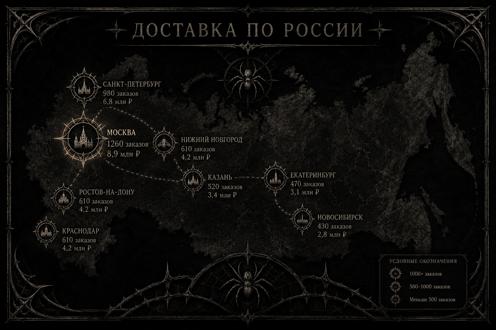

Слоганы бренда
- «Всегда в движении. Всегда в форме.»
- «Твой темп. Твой стиль. Твоя уверенность.»
- «Когда день на пределе, образ должен работать за тебя.»
Люди постоянно бегут: на встречу, на работу, в аэропорт, к друзьям, на свидание. В такие моменты одежда должна не отвлекать, а давать ощущение уверенности. Phoneutria nigriventer — про стиль, который держит темп жизни и помогает выглядеть собранно в любой критический момент.
Модель реализована через несколько HTML-страниц с общей верхней панелью навигации.
товаров в каталоге
стилей в подборке
₽ до бесплатной доставки
Гистограмма (Chart.js)
Круговая диаграмма (Chart.js)
Статистика по городам: количество и сумма заказов (смоделированные данные)
